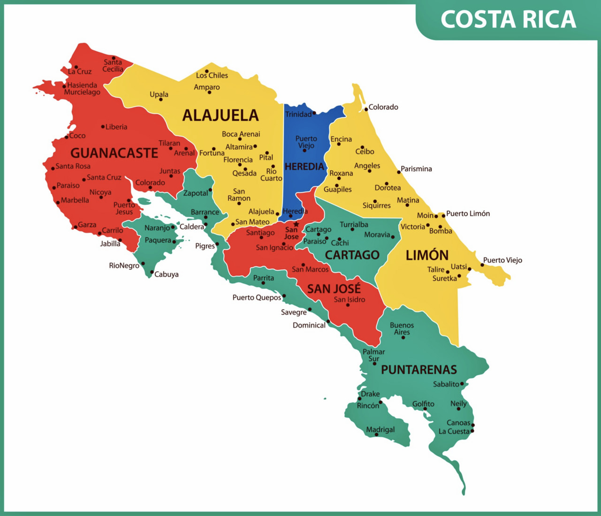

Tarea 1 - Tarea de investigación sobre etiquetas HTML5
Estudiante: José Pablo Vásquez Madrigal
Este texto está relacionado a la etiqueta H1 mediante un "hgroup"
Las etiquetas "p" nos ayudan a colocar párrafos en la página.
Las etiquetas Tipo "Hx" nos van a mostrar los encabezdos en orden de importancia, siendo H1 (más GRANDE) el más importante y el H6 menos importante (más pequeño)
Las etiquetas hgrup agrupa un párrafo con el título al cual se hace referencia.
Autor: José Pablo Vásquez MadrigalLa etiquetas "address" permiten colocar información relacionada al autor, páis de procedencia u otra información relacionada
La etiquetas "br" permiten hacer saltos de linea entre la información colocda para que sea visible como líneas multiples
Esta página contiene ejemplos prácticos de etiquetas HTML5.
Las etiquetas "div" son contenedores que agrupan elementos varios.Se han utilizado etiquetas de encabezado, párrafos, dirección y saltos de línea para mostrar la información de manera estructurada.
Este video se muestra dentro de la página mediante la etiqueta iframe.
Algunas tecnologías utilizadas en desarrollo web son:
La etiqueta "ul" se utiliza para crear listas de viñetas no ordenadas
Pasos para crear una página HTML:
La etiqueta "li" se usa para listar elementos de una lista, mientras que la etiqueta "ol" muestra la lista de manera ordenada, agregando incluso una numeración
Ejemplo de tecnologías utilizadas en el desarrollo web:
Las etiquetas "dl" permiten crear listas con sus respectivas explicaciones de manera agrupada.
Las etiquetas "dt" representan al termino que vamos a definir.
Las etiquetas "dd" son las que contienen la descripción del término. Crean un efecto de tabulación.
La etiqueta "figure" se usa para agrupar contenido como imágenes y otros. La etiqueta "figcaption" se utiliza para agregar un título o descripción a la imagen.
HTML5 es la quinta versión de HTML, que introduce nuevas características y elementos para mejorar la estructura y funcionalidad de las páginas web.
La etiqueta "details" permite crear un contenedor que puede expandirse o colapsarse, mientras que la etiqueta "summary" se utiliza para proporcionar un resumen o título para el contenido dentro del contenedor.
La etiqueta "dialog" se utiliza para crear un cuadro de diálogo que puede abrirse y cerrarse según sea necesario. En este ejemplo, el diálogo está abierto por defecto.
Nombre: José Pablo Vásquez Madrigal Curso: Diseño de Aplicaciones Web Tarea: Etiquetas HTML5
La etiqueta "pre" se utiliza para mostrar texto preformateado, preservando los espacios y saltos de línea tal como se escriben en el código fuente. Esto es útil para mostrar código o información que requiere un formato específico.
HTML es el lenguaje de marcado estándar para crear páginas web.
La etiqueta "blockquote" se utiliza para representar una cita extensa o un bloque de texto proveniente de otra fuente.
Durante el aprendizaje, es importante recordar que El conocimiento es poder.
La etiquta "q" agrega comillas al texto citado y resalta parte del texto que se encuentra dentro de esta etiqueta.
Según el libro HTML5: The Missing Manual, HTML5 introduce nuevas características y elementos para mejorar la estructura y funcionalidad de las páginas web.
La etiqueta "cite" se utiliza para referenciar el título de una obra, como un libro, artículo o sitio web. En este ejemplo, se utiliza para citar el título de un libro relacionado con HTML5.
La sigla HTML corresponde al lenguaje utilizado para estructurar páginas web.
La etiqueta "abbr" se utiliza para representar una abreviatura o acrónimo. Al posicionar el cursor sobre la abreviatura, se muestra el texto completo en un tooltip.
HTML es un lenguaje de marcado utilizado para estructurar el contenido de las páginas web.
La etiqueta "dfn" se utiliza para identificar un término que está siendo definido.
Para crear un párrafo en HTML utilizamos la etiqueta <p>.
La etiqueta "code" se utiliza para representar fragmentos de código.
Para guardar el archivo en Visual Studio Code podemos presionar Ctrl + S.
La etiqueta "kbd" se utiliza para representar teclas o comandos introducidos mediante el teclado.
En esta oración la palabra HTML5 se muestra en negrita.
La etiqueta "b" permite llamar visualmente la atención sobre un texto mostrándolo en negrita.
Importante: Guarda los cambios antes de cerrar Visual Studio Code.
La etiqueta "strong" se utiliza para indicar que un texto tiene especial importancia.
En desarrollo web utilizamos el término frontend para referirnos a conceptos relacionados con la interfaz de una aplicación.
La etiqueta "i" permite diferenciar una parte del texto, normalmente mostrándola en cursiva.
Para aprender HTML es muy importante practicar los diferentes tipos de etiquetas.
La etiqueta "em" se utiliza para proporcionar énfasis a una parte del texto.
Actualmente estamos estudiando las etiquetas de HTML5.
La etiqueta "mark" permite resaltar o marcar una parte del texto.
Esta página fue desarrollada como parte de la Tarea 1.
Curso: Diseño de Aplicaciones Web.La etiqueta "small" se utiliza para representar información secundaria utilizando normalmente un tamaño de texto menor.
La versión que utilizaremos es HTML4 HTML5.
La etiqueta "del" se utiliza para representar texto que ha sido eliminado o reemplazado.
La versión que utilizaremos es HTML4 HTML5.
La fórmula química del agua es H2O.
La etiqueta "sub" se utiliza para representar texto en formato de subíndice.
Diez elevado al cuadrado se representa como 102 y su resultado es 100.
La etiqueta "sup" se utiliza para representar texto en formato de superíndice.
Esta página fue desarrollada el .
La etiqueta "time" se utiliza para representar fechas y horas dentro de un documento HTML.
El lenguaje estudiado en esta tarea es HTML versión 5.
La etiqueta "data" permite asociar un valor a un contenido visible dentro de la página.
Actualmente estamos aprendiendo HTML5 en el curso de Diseño de Aplicaciones Web.
La etiqueta "span" permite agrupar una parte específica del texto.
Para obtener más información sobre HTML puede visitar https://www.w3schools.com/html/W3Schools.
Para obtener más información sobre HTML puede visitar https://www.w3schools.com/html/W3Schools.
La etiqueta "a" permite crear enlaces hacia otras páginas o recursos.
Seleccione una provincia haciendo clic sobre el mapa:

La etiqueta "map" permite definir un mapa de imagen con diferentes zonas interactivas.
La etiqueta "area" permite definir las zonas de la imagen que funcionarán como enlaces.
Reduzca el tamaño de la ventana para observar el cambio de imagen.
La etiqueta "picture" permite proporcionar diferentes versiones de una imagen.
La etiqueta "source" permite indicar imágenes alternativas según determinadas condiciones.
La etiqueta "audio" permite insertar y reproducir archivos de audio en una página web.
La etiqueta "source" permite especificar el archivo multimedia que debe reproducirse.
La etiqueta "video" permite insertar y reproducir archivos de video en una página web.
La etiqueta "video" permite insertar archivos de video en una página web.
La etiqueta "source" indica el archivo de video que debe reproducirse.
La etiqueta "track" permite agregar pistas de texto al video, como subtítulos.